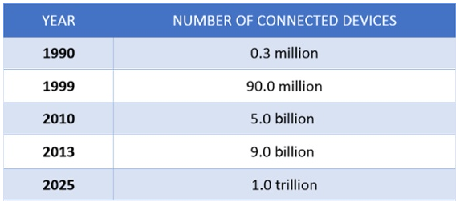
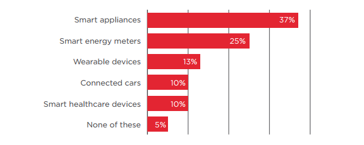

Každý rok sa počet zariadení pripojených do sieti Internetu vecí zväčšuje podľa následovného
grafu:

Systém Internetu vecí sa dá využiť skoro všade.
Na nasledujúcich grafoch môžeme vidieť pomer jednotivých typov zariadení v
systéme Internetu vecí:
